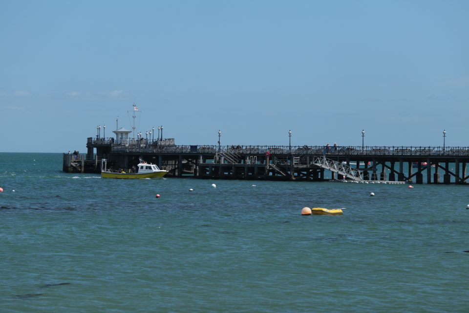
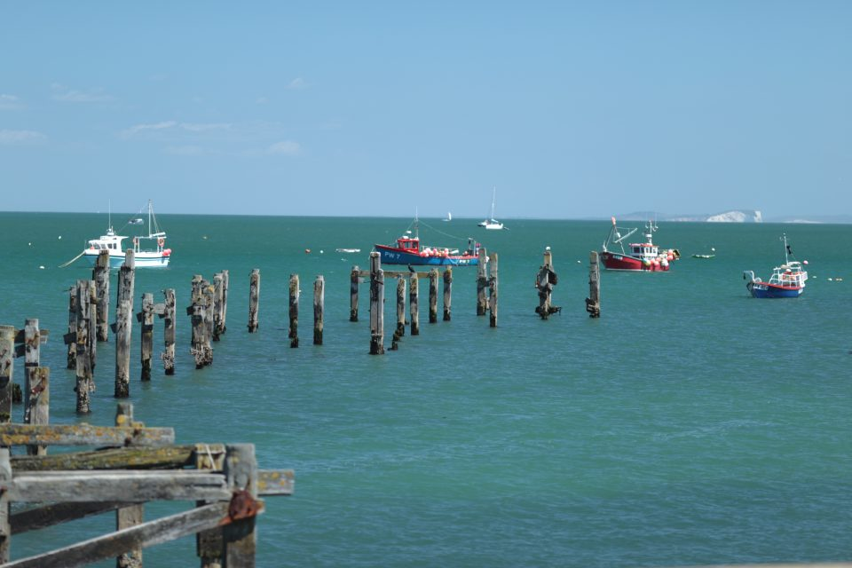

Swanage, May 2015

Phil, who’s midway through his sports diver training, gets the first dives of the season under his belt in Swanage.
It's Friday evening , I have checked and re-checked my diving kit and packed a good bobble hat and outer coat to wear on board after each dive, as UK diving can be a bracing experience. I'm happy everything is in place, including the cake and apple pies I promised my Best Caravan buddies that I'd bring with me to complement all their goodies. So with the Blues Bros on the CD, like Jake Elwood, I have my sun glasses on, a full tank of fuel, a pack of Mr Kipling’s and I'm on mission from the sea gods of Swanage.
Having arrived at The Palm Beach Hotel where the bell boy took care of my kit, known locally as the Swanage Bay caravan park, I headed straight for the bright lights of the bar and immediately had to clear my ears at the cackling, high pitch screams of the resident karaoke singers. Following a swift drink, the tinitus in my ears soon became my cue to hit the sack and look forward to early morning breakfast with my best caravan buddies.
The first dive under the pier left me with mixed emotions as visiblility was almost zero and buoyancy an issue. The second dive drifting off the Fleur de Lys left me emotionally scared, trying to deploy my first DSMB in open water – still all part of the enjoyment Trevor told me afterwards. I was down but not beaten. A few beers and a good night’s most welcome sleep saw me up and at ‘em the next morning for a dive with Boggie, to see the WW2 Valentine tanks, followed by an afternoon drift dive. WHAT A GREAT DAY! Forget the buoyancey issues of yesterday – I was down there with the fishes, crabs, eels and a good mile and a bit drifting at what seemed like break neck speeds, "2 miles per hour, kid" Boggie informed me later.

Back on board, the sun was shining and Swanage was my Hawaii, minus the coconuts and splendid cocktails! However, a fresh strawberry ice cream and a stroll with my diving buddies completed a marvellous weekends diving with the Argonauts. Roll on the Scillies in July!